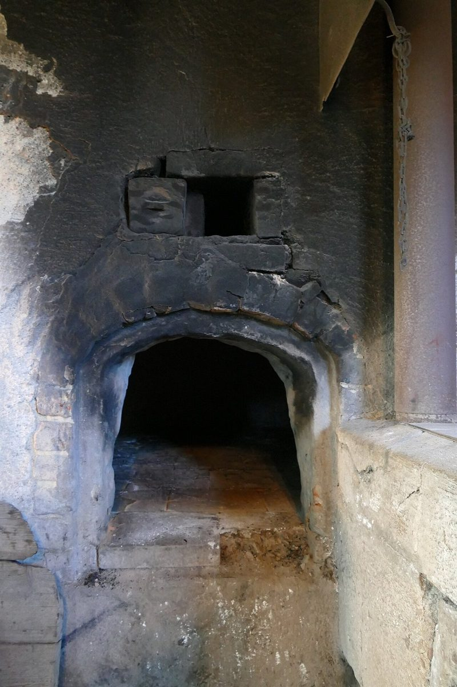

口コミ
口コミ(イメージ例)
ここに載せるのは、制作側が作った見本の文章です。
以下の3件は制作側の創作で、実在のお客様の投稿ではありません。お店の設備・立地・提供内容を示すものでもありません。
イメージ例Instagramの写真を眺めていたら、次の休みに足を運んでみたくなりました。営業日が分かるといいなと思います。
イメージ例「麦人」という屋号の字面がまず気になって、投稿を見はじめました。どんなお店なのか、実際に行って確かめたいです。
イメージ例まだ訪ねたことはありませんが、玉名のパン屋として名前を覚えておきたいお店です。詳しい情報が載ったらまた見にきます。
